我在滨中的日子
滨中六年的日子，见了不少前所未闻的人事物，与初一相比已然大不相同，认识了可以笑谈风生，互相信任的知心好友，有幸成为高三理壹班的一员，共同经历欢笑与难忘的回忆。
最深刻的经历之一莫过于高一的AQ营，三天两夜的山林生活，一起苦中作乐，野炊，相互合作，守漫漫长夜，赏星辰明空，引吭高歌，赏山林自然钟灵毓秀的景色。营火会欢乐的引吭高歌，穿行山林嬉水，粗茶淡饭的饮食，咱们不分彼此，无所顾忌，一起吃彼此的口水，未煮熟的生米，喝掺了灰硝的水，满身汗臭泥泞，种种都因为疫情让我们无法再此体验AQ的那种camaraderie，却成为了此生最珍贵的，唯一的夏日山间回忆。
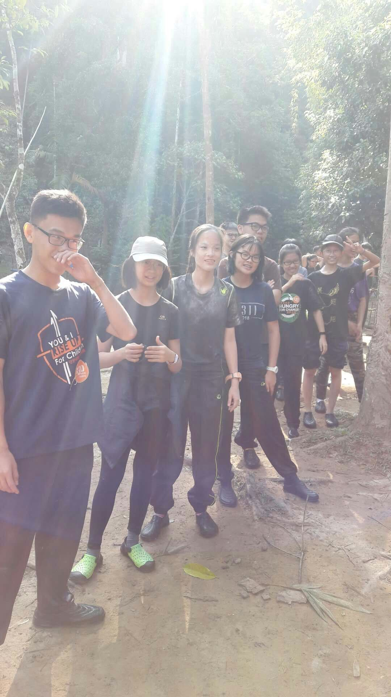
高一AQ营
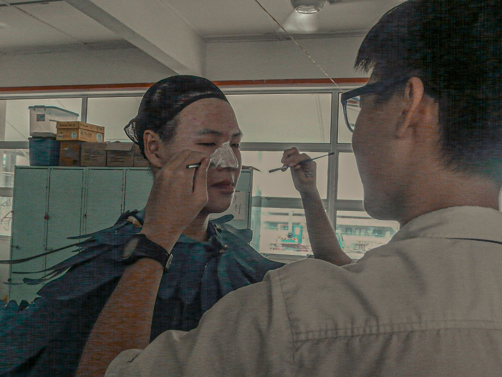
行前上装
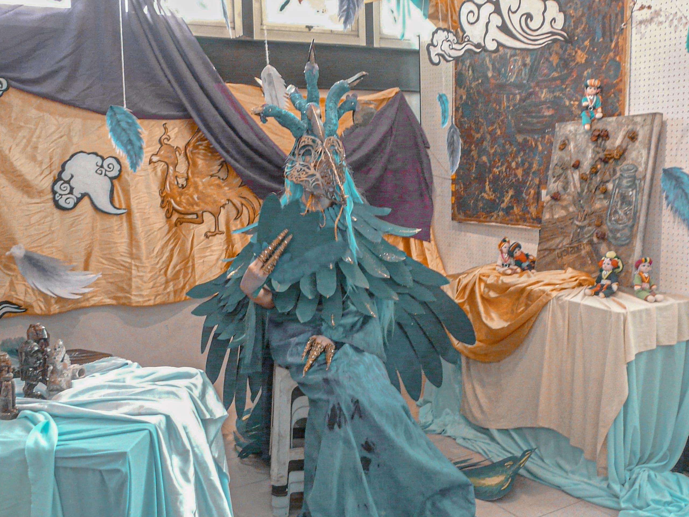
最后造型
2018和2019年的美术学会户外写生营是我最喜欢的活动了，第一次是我主办，第二次则是当执委筹办。正是因为这些活动，我才可以接触到外面的世界，见证不一样的人事物情，一切新鲜感都刺激着我的感官，只能说，忘却上课烦忧，尽享艺术探索之旅，感受自然，感受内心，最重要的是和朋友们一起玩，便是中学生活最重要最难忘的经历了。
收获友谊，历经岁月，滨中日子，不悔走一趟。

1.0 Tanjung Sepat 站
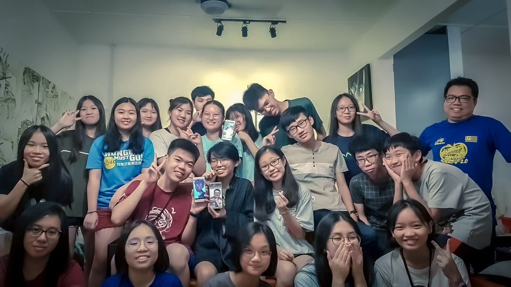
2.0 Sasaran 站

高一运动会
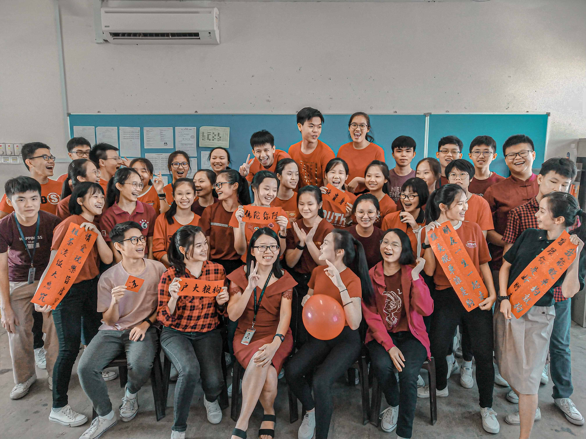
高一新春
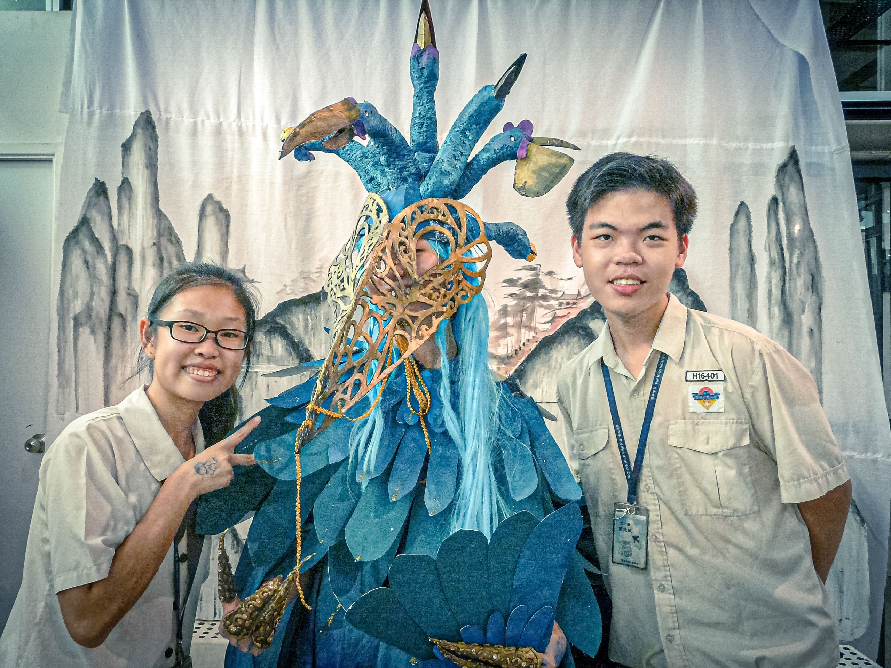
古斋玄忆联合展
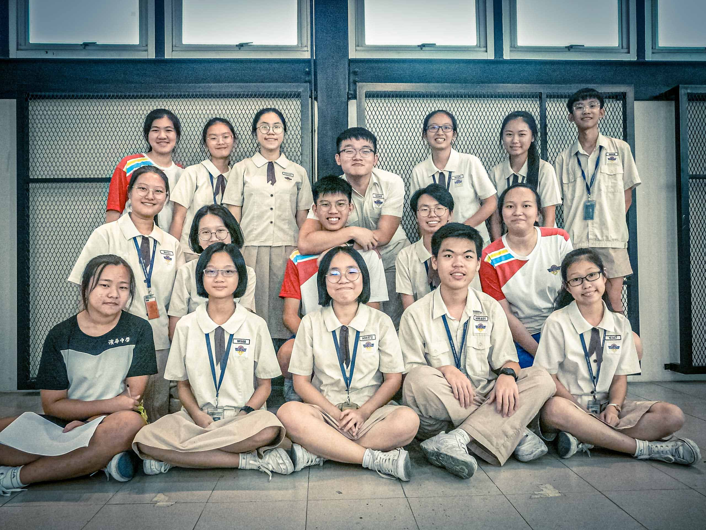
亲爱的美术学会
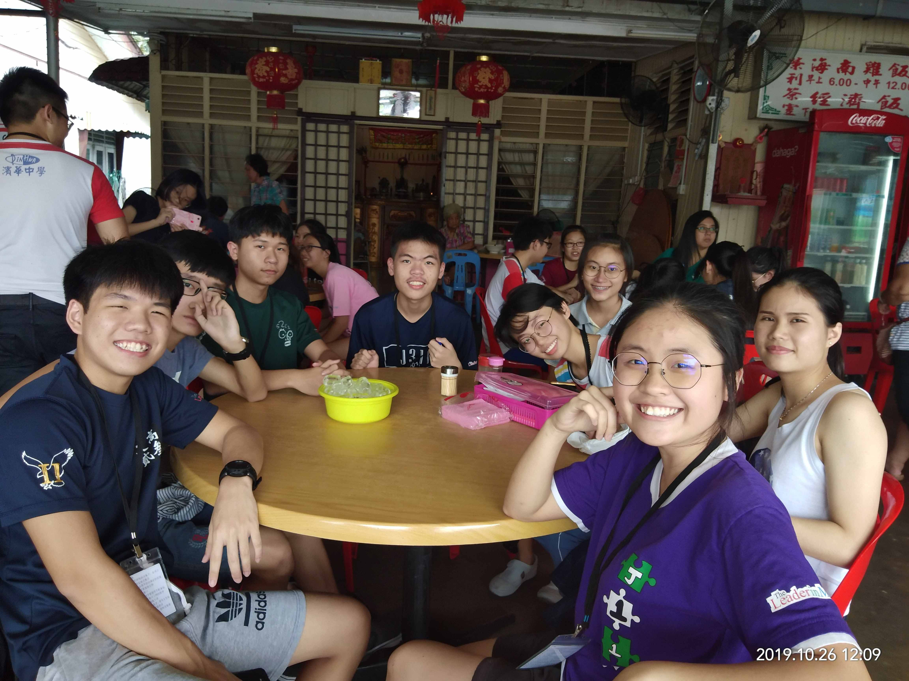
美术学会写生营2.0
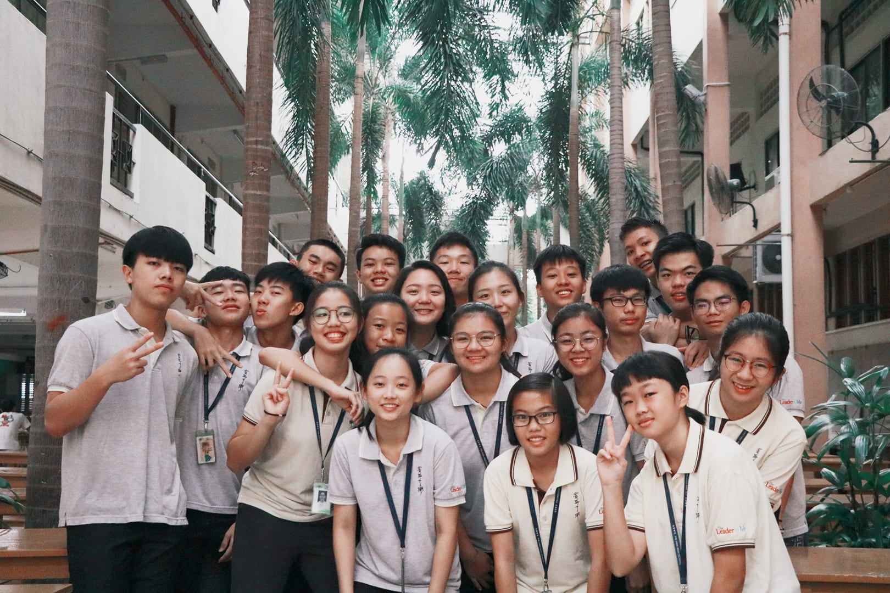
宿舍自治会
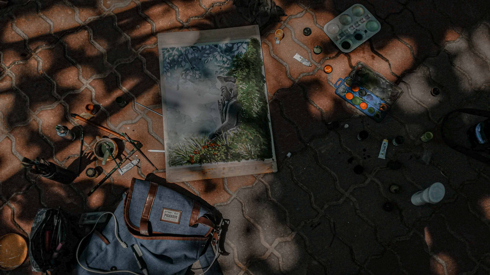
户外写生比赛
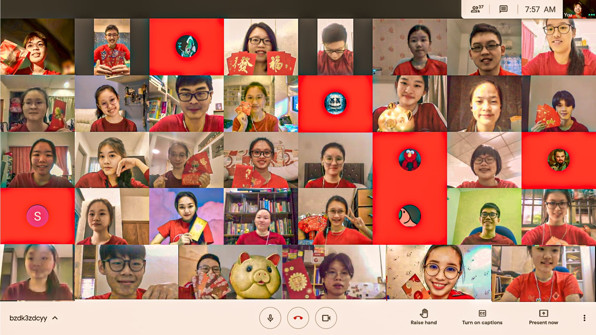
网课新春2020~
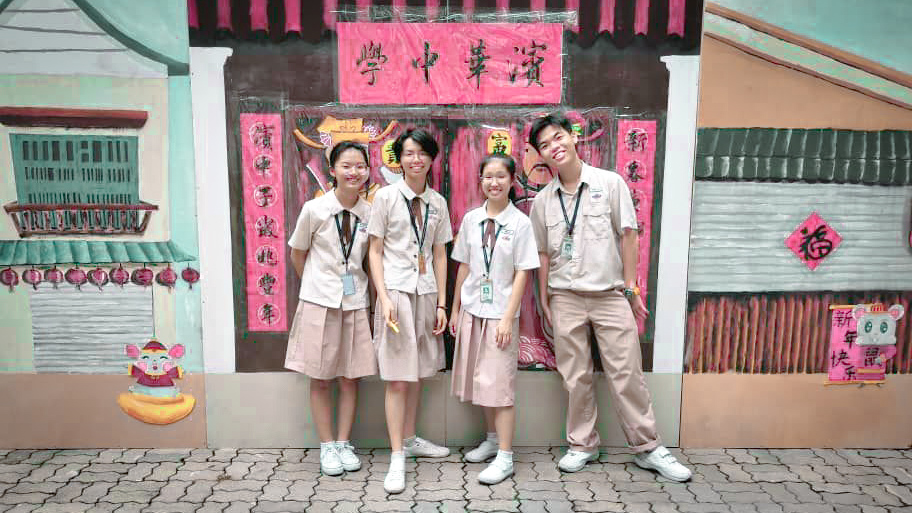
新春布置合照2020
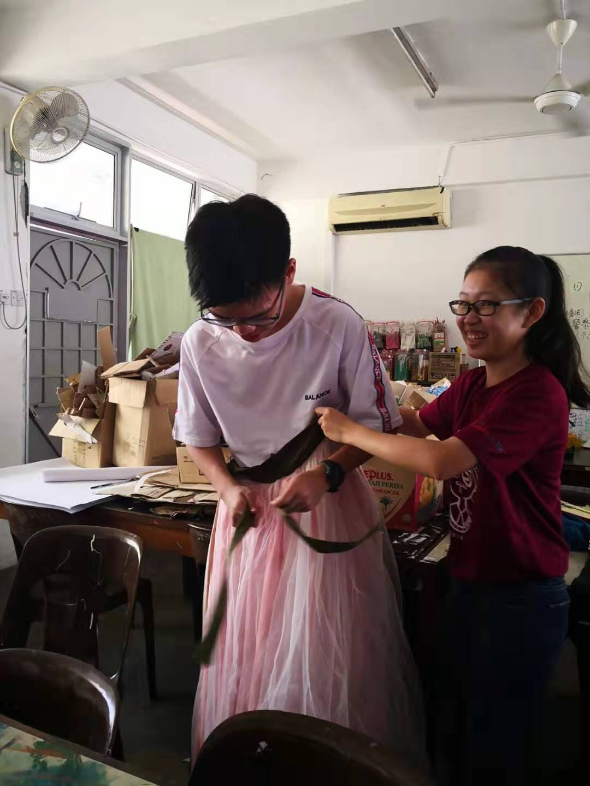
呵呵
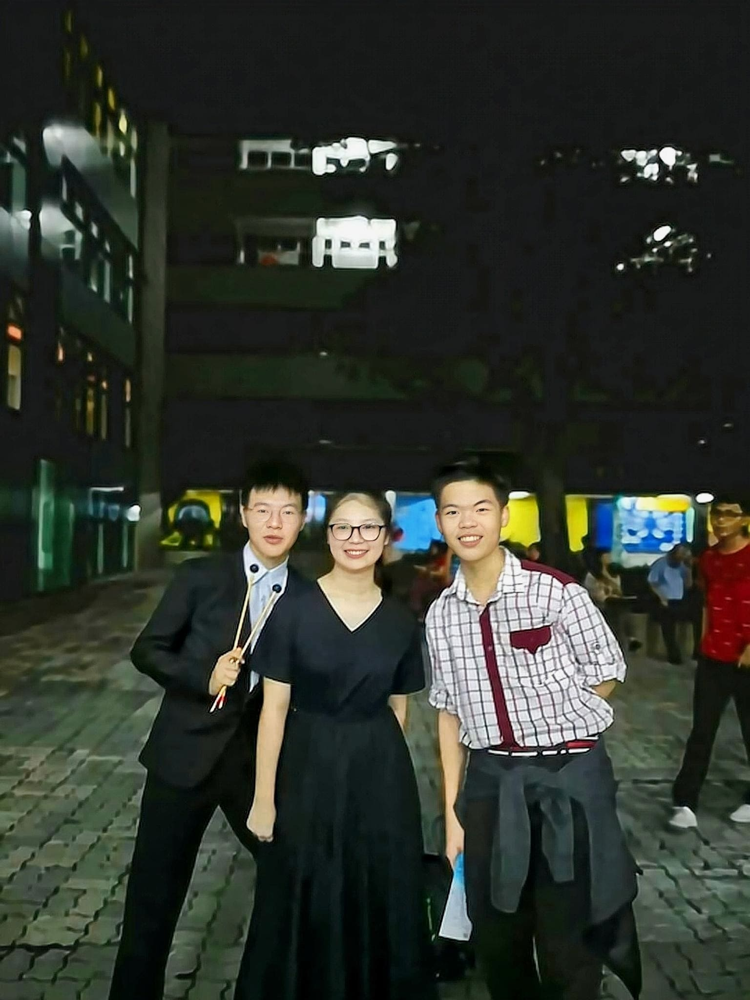
亲爱的郝朋友们的公演